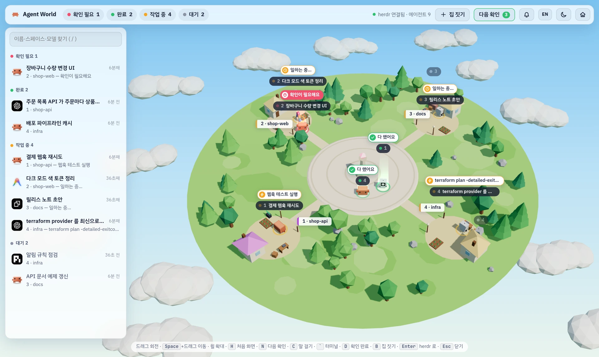
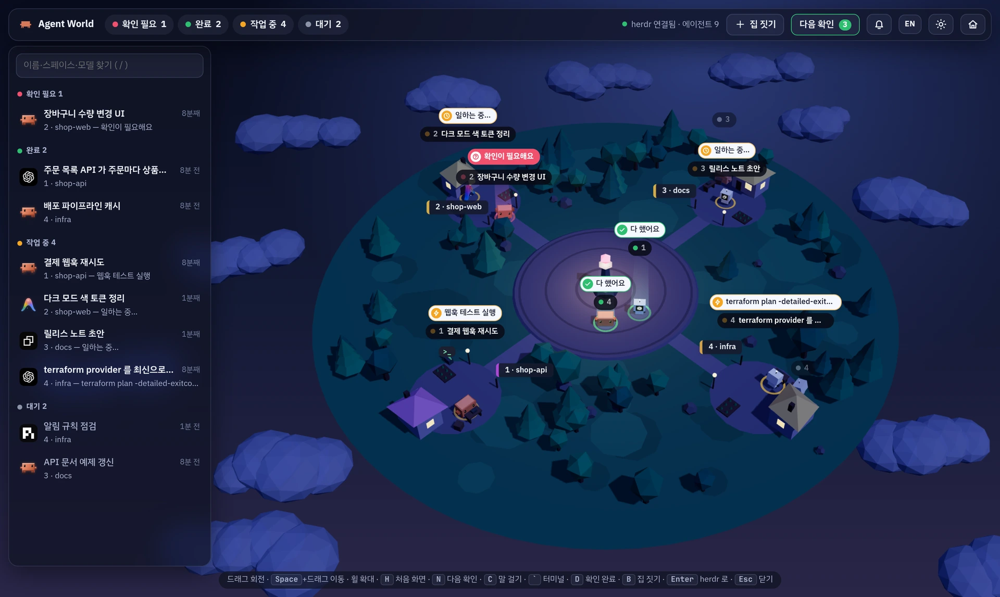
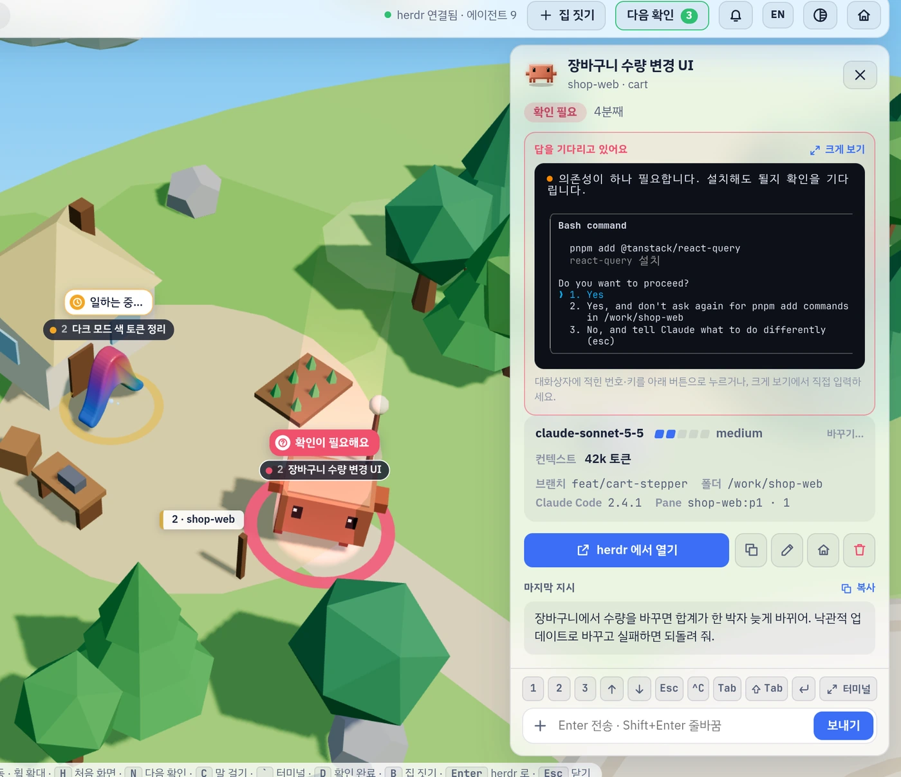
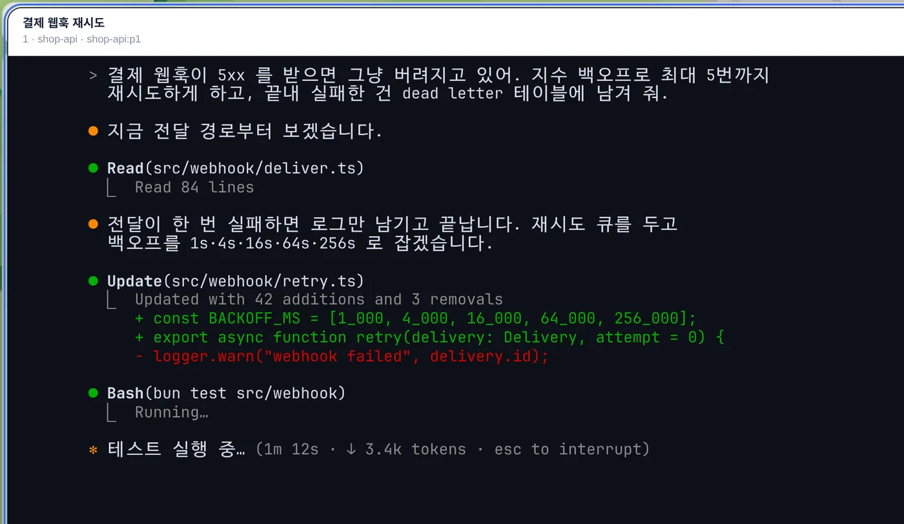
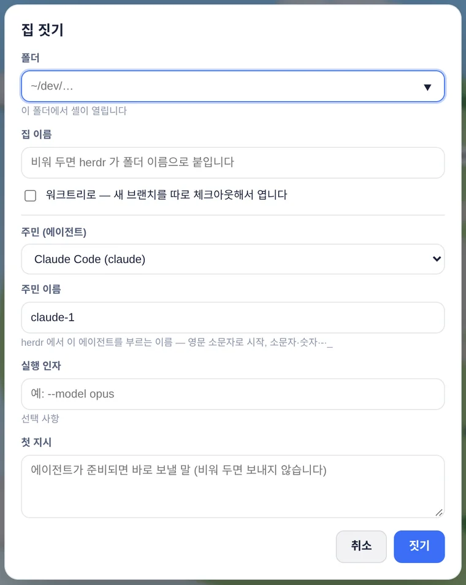
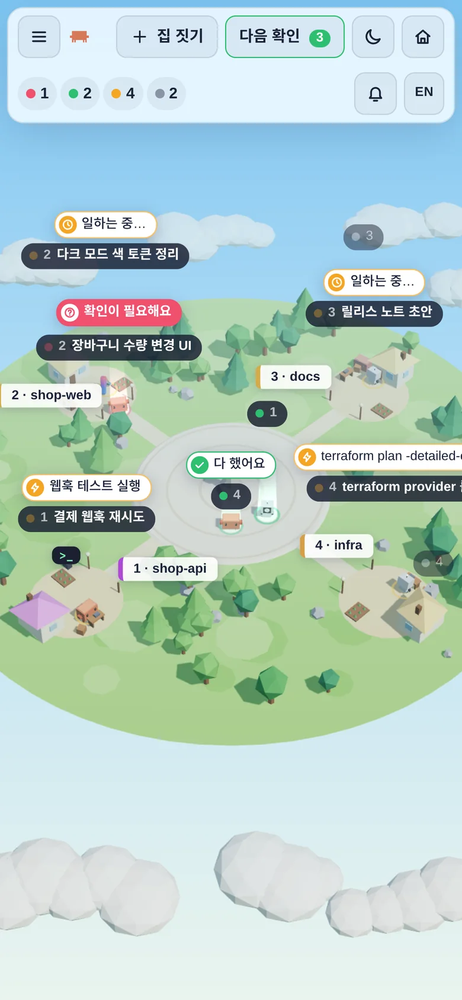
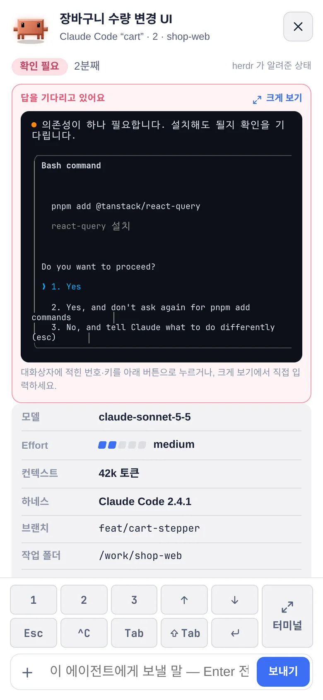

코딩 에이전트들이 사는 작은 마을A small village where your coding agents live
herdr 에 띄워 둔 에이전트가 캐릭터가 되어 섬에 삽니다. 누가 일하고 있는지, 누가 끝냈는지, 누가 내 답을 기다리는지는 서 있는 자리만 봐도 알 수 있습니다. The agents you run in herdr become characters on an island. Who is working, who is done and who is waiting on you: you can tell by where they stand.
상태를 눌러 보세요. 동작을 그림으로 옮긴 시연이고, 실제 화면은 바로 아래에 있습니다. Press a status. This is a drawn demo of the behaviour; the real screen is right below.
Overview
에이전트 아홉, 화면은 하나Nine agents, one screen
집 한 채가 워크스페이스 하나입니다. 터미널 탭을 하나씩 넘겨 보지 않아도, 광장에 누가 나와 있고 대문 앞에서 누가 뛰고 있는지 보면 됩니다. One house is one workspace. Instead of flipping through terminal tabs, look at who has walked out to the plaza and who is jumping at a gate.


작업 중Working
집터 마당에서 일합니다. 말풍선에 지금 하는 일이 뜹니다.In the yard of its house. The speech bubble shows what it is doing.
확인 필요Needs input
대문 앞에 나와 뜁니다. 빨간 빛기둥이 섭니다.Comes out to its gate and jumps, under a red beam.
완료Done
가운데 광장으로 걸어 나와 초록 빛기둥 아래에서 기다립니다.Walks out to the plaza and waits under a green beam.
대기Idle
집 옆에서 졸고 있습니다. 흐릿하게 보입니다.Dozes beside the house, dimmed.
Talk
창을 옮기지 않고 지시하고 답합니다Prompt and answer without switching windows
- C
지시 보내기Send a prompt
캐릭터를 눌러 상태 창을 열고 아래 입력창에 씁니다. 에이전트의 로그에 내 지시가 찍힌 것을 확인한 뒤에 전달됐다고 알려 줍니다. 마지막 응답은 복사 버튼으로 원문을 가져갑니다.Click a character and type in the input at the bottom of its status window. Delivery is confirmed from the user turn that appears in the agent's log. A copy button takes the last reply as written.
- 1
질문과 권한 요청에 답하기Answer questions and permission requests
에이전트가 무언가 물으면 그 대화상자가 상태 창 위쪽에 그대로 뜹니다. 적힌 번호를 빠른 키 줄에서 누르면 됩니다. 하네스마다 선택지가 달라서 버튼으로 바꾸지 않고 화면을 그대로 보여 줍니다.When an agent asks something, its real dialog appears at the top of the status window. Press the number it shows on the quick-key row. Choices differ by harness, so the screen is shown as it is instead of being turned into buttons.
- /
스킬 고르기Pick a skill
Claude Code·Antigravity 세션이면 입력창에 / 를 쳐서 그 세션의 스킬을 이름과 설명으로 거르고 골라 넣습니다.In a Claude Code or Antigravity session, type / in the input to filter that session's skills by name and description and drop one in.
- ■
하던 일 멈추기Stop what it is doing
일하는 중이면 상태 줄의 멈추기가 터미널의 Esc 처럼 지금 턴을 끊습니다. Claude Code 의 백그라운드 에이전트도 함께 멈추고, 직접 멈춘 것이라 완료로 알리지 않습니다.While it works, Stop on the status line ends the current turn like Esc in the terminal. Claude Code's background agents stop too, and since you stopped it, it is not announced as done.
- ＋
이미지 보여 주기Show an image
입력창에 붙여 넣거나 끌어다 놓으면 지시와 함께 전달됩니다(PNG·JPEG·GIF·WebP, 장당 10MB, 한 번에 8장).Paste or drop it into the input and it goes with the prompt (PNG, JPEG, GIF, WebP; 10MB each, 8 at a time).


Terminal
그 자리에서 여는 터미널Need the terminal? Open it right there
` 를 누르면 그 pane 의 화면이 크게 열립니다. 열려 있는 동안에는 키 입력이 그대로 pane 으로 가고, 한글도 됩니다. 지난 출력은 스크롤백으로 보고, 스크롤백이 없는 전체 화면 Claude Code 는 앱의 화면을 넘겨 봅니다. 색은 ghostty 설정의 배경·글자색·팔레트를 읽어 그대로 씁니다. Press ` and that pane's screen opens large. While it is open, keystrokes go straight to the pane. Earlier output is available as scrollback (fullscreen Claude Code is paged in the app itself), and colours come from your ghostty config.
Build
새 일의 시작은 집 짓기Start new work by building a house
폴더, 이름, 워크트리 여부, 들일 에이전트와 그 모델·effort, 첫 지시까지 한 번에 정합니다. 지어 둔 집의 문패를 누르면 주민과 탭을 더하거나, 이름을 바꾸거나, 철거할 수 있습니다. 같은 저장소의 워크트리는 본채 옆 별채로 한 집터에 모이고, 집 패널의 ‘워크트리 추가’로 바로 지을 수 있습니다. 닫을 때는 함께 꺼지는 에이전트를 먼저 보여 주고 확인을 받습니다. Folder, name, worktree or not, the agent to add with its model and effort, and its first prompt, in one go. Click a house sign to add residents and tabs, rename it or demolish it. Worktrees of one repository gather on one lot as annexes beside the main house, and “Add worktree” in the house panel builds another. Closing anything lists the agents that will stop with it and asks first.



Phone
휴대폰으로 이어 가기Step away and carry on from your phone
좁은 화면에서는 목록이 서랍으로 바뀌고 상태 창과 터미널이 화면 전체를 씁니다. 화면 자판에 없는 Esc·Tab·화살표·Ctrl+C 는 버튼 줄로 나오고, 버튼 줄의 Alt 를 걸고 Enter 를 누르면 Alt+Enter 가 갑니다. 홈 화면에 앱으로 설치하면 주소창 없이 뜹니다. On a narrow screen the list becomes a drawer and the status window and terminal take the whole screen. Keys the on-screen keyboard lacks (Esc, Tab, arrows, Ctrl+C) appear as a row of buttons, and its Alt sticks to the next key, so Alt then Enter sends Alt+Enter. Install it to the home screen and it opens without the address bar.
종 단추를 켜 두면 에이전트가 끝났거나 확인을 기다릴 때 알림이 옵니다. 화면을 닫았거나 앱을 내려 둔 동안에도 옵니다. 기본은 꺼져 있고 기기마다 따로 켭니다. 알림의 글은 그 브라우저만 풀 수 있게 잠가서 보냅니다. Turn on the bell button and you are notified when an agent finishes or needs input, even with the page closed or the app in the background. It is off by default and switched on per device, and the text is encrypted so that only your browser can read it.
다른 기기에서는 tailscale serve 로 tailnet 안에서만 엽니다. 공인 인터넷에는 내보내지 않습니다.
Other devices reach it through tailscale serve, inside your tailnet only. It is never exposed to the public internet.
PC 가 여러 대면 그중 한 대가 나머지를 모아 보여 줍니다. PC 마다 작은 섬이 하나씩 뜨고, 누르면 그 PC 의 월드로 들어갑니다. 열쇠를 넣지 않은 PC 는 잠긴 섬으로만 보입니다. With several machines, one can gather the rest: each machine is a small island, and clicking it enters that machine's world. A machine you have not unlocked shows only as a locked island.
How it works
하네스에 훅을 걸지 않습니다No hooks into your harnesses
읽는 것은 두 가지뿐입니다. herdr 소켓에서 어느 pane 에 어떤 에이전트가 있고 상태가 무엇인지 읽고, 하네스가 직접 남기는 로그의 끝부분에서 모델·effort·지금 하는 일을 읽습니다. 조작도 같은 herdr 소켓으로 보냅니다. 밖으로 묻는 것은 Claude Code 사용량 하나뿐입니다. It reads two things. The herdr socket says which pane runs which agent and its status; the tail of the log each harness writes for itself gives the model, effort and current activity. Control goes back through the same herdr socket. The only thing it asks the network for is Claude Code usage.
herdr 소켓herdr socket
session.snapshot
하네스 로그Harness logs
Claude Code · Antigravity · Codex
Agent World 서버Agent World server
Bun · 127.0.0.1 에만 묶입니다Bun · bound to 127.0.0.1 only
브라우저Browser
three.js 로 그린 마을과 상태 창the village in three.js, and the status window
접속 열쇠Access key
모든 /api 요청에 열쇠를 요구합니다. 열쇠는 이 사용자만 읽을 수 있는 파일에 둡니다.Every /api request needs the key, kept in a file only you can read.
바꾸는 요청은 좁게Narrow writes
같은 출처에서 온 POST 만 받고, 지금 herdr 에 실제로 있는 pane·탭·스페이스만 대상으로 합니다.Only same-origin POSTs, and only for panes, tabs and workspaces that exist in herdr right now.
보기 전용Read-only mode
AGENT_WORLD_READONLY=1 이면 지시·키 입력·만들기·닫기를 모두 거절합니다.AGENT_WORLD_READONLY=1 refuses prompts, keystrokes, creating and closing.
그 밖의 하네스는 herdr 가 알려 주는 제목과 상태만으로 캐릭터가 섭니다. README 의 동작 원리에 로그 경로와 어댑터 추가 방법이 있습니다. Other harnesses get a character from the title and status herdr reports. Log paths and how to add an adapter are in the README.
Install
설치는 한 줄One line to install
herdr 플러그인으로As a herdr plugin
herdr plugin install KyongSik-Yoon/agent-world
herdr 가 시작할 때마다 서버를 띄워 둡니다. Agent World: open in browser 동작을 키에 묶어 두면 그 키로 브라우저에서 열립니다(README 의 키 묶기 참고).
herdr starts the server whenever it starts. Bind Agent World: open in browser to a key to open it in the browser (see the README).
Bun 이 필요합니다(1.4.4 에서 확인했습니다). herdr 0.9.5 이상, Linux·macOS. Needs Bun (checked on 1.4.4), herdr 0.9.5 or later, Linux or macOS.
직접 실행Run it yourself
git clone https://github.com/KyongSik-Yoon/agent-world cd agent-world bun install bun start
출력된 주소에는 접속 열쇠가 붙어 있습니다. 브라우저마다 처음 한 번만 그 주소로 열면 됩니다. 환경 변수와 tailnet 설정은 README 에 있습니다. The printed address carries the access key; open it once per browser. Environment variables and tailnet setup are in the README.